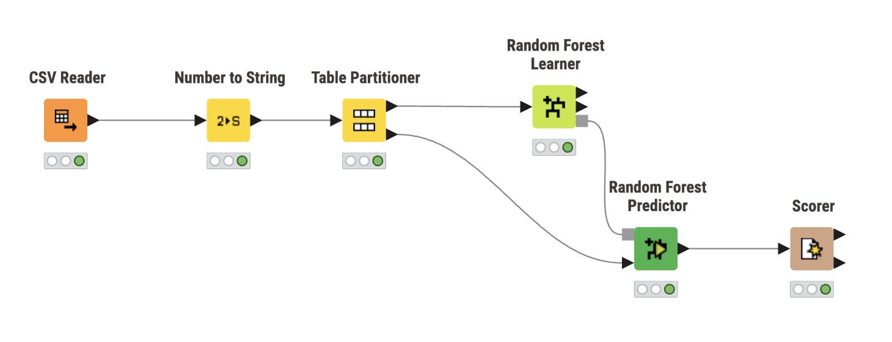
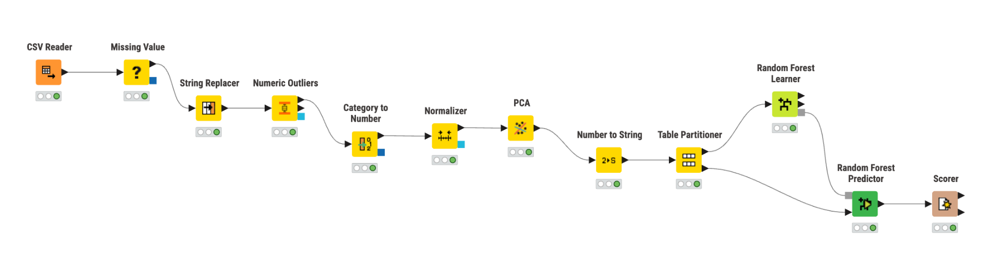
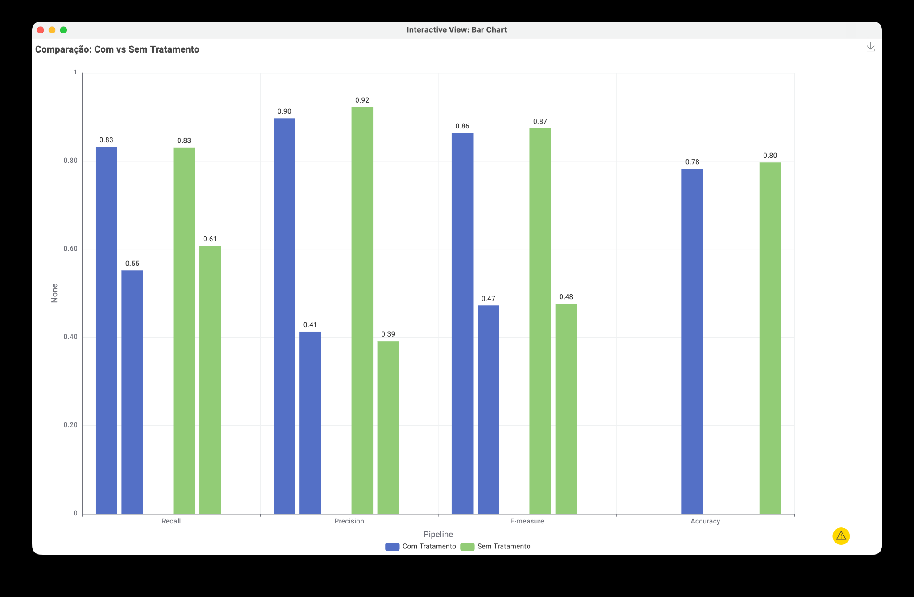

Pipeline A: Sem Tratamento de Dados

CSV Reader → Number to String → Table Partitioner → Random Forest → Scorer
Pipeline B: Com Tratamento Completo

Missing Value → Outliers → Normalizer → PCA → Random Forest → Scorer

Verde = Sem Tratamento | Azul = Com Tratamento